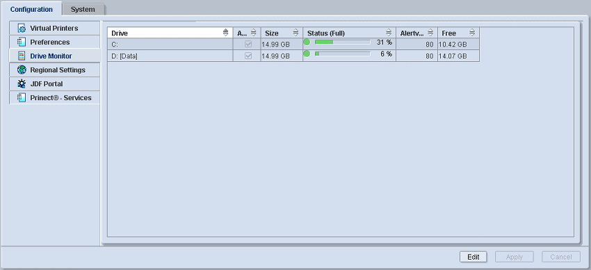

Вы можете настроить монитор диска в разделе «Администрация > Конфигурация > Монитор диска».

Диспетчер монитора следит за жесткими емкость диска локальных накопителей Prinect Shooter PC.
Если жесткий диск в системе Prinect Shooter «полный», это может привести программное обеспечение Prinect Shooter к полному застою или вызвать неконтролируемое состояние. Поэтому важно гарантировать, что пространство освобождается во времени на диске, который слишком сильно загружен. В частности, диски с папками на катушках всегда должны иметь определенное количество свободной памяти в резерве.
Локальные жесткие диски или разделы (например, диск, на котором расположен каталог катушек) контролируются монитором диска, чтобы убедиться, что этот резерв есть. При превышении определенного уровня (предупреждения) никакие другие параметры, требующие памяти жесткого диска, не запускаются Prinect Shooter. Виртуальные принтеры, чьи каталоги находятся в разделе, который находится в статусе «Alert» (предупреждение было превышено), переключаются на статус «Pause». Сообщение в панели состояния пользовательского интерфейса Prinect Shooter указывает на это.
После того, как задания были обзаданиены или файлы, которые больше не требуются, были удалены вручную, все эти меры будут автоматически отменены. Однако процессы, происходящие в настоящее время, не прекращаются, так что переполнение не может быть предотвращено во всех случаях.
Бар-граф «Статус (полный)» может принимать следующие цвета:
Все в порядке, накопитель имеет достаточно свободного места.
Статус привода имеет решающее значение, сделайте больше места доступным! Переход от зеленого к желтому происходит при значении оповещения -5%.
Значение оповещения превышено. Виртуальные принтеры были остановлены. Виртуальные принтеры могут возобновить свою работу только тогда, когда на диске освободилось достаточно места.
Пожалуйста, соблюдайте примечания ниже при работе с монитором привода:
Все виртуальные принтеры остановлены, это означает, что никакие дополнительные задания не могут быть отправлены на виртуальные принтеры, если значение оповещения, установленное для одного из дисков, требуемых виртуальным принтером, было превышено (функция предупреждения активирована). Виртуальные принтеры не могут быть повторно запущены вручную.
Чтобы настроить монитор диска, нажмите «Редактировать». Вид конфигурации открывается:
Чтобы активировать мониторинг одиночных накопителей на ПК Prinect Shooter, нажмите соответствующий флажок в столбце «Активировать». В этом В графе «Алертное значение» можно определить, при каком проценте будет активирован мониторинг емкости диска. Предустановлено значение 80%.
Нажав на кнопку «Применить», настройки активируются и вид конфигурации закрывается.
Copyright © 2013 Heidelberger Druckmaschinen AG